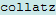
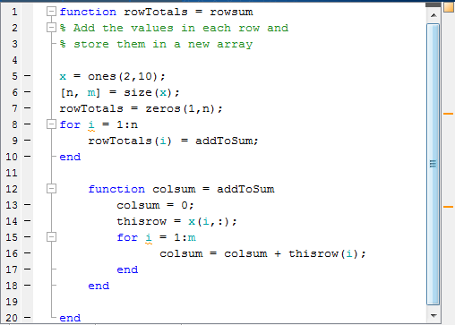
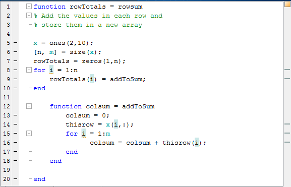

Check Variable Scope in Editor
Scoping issues can be the source of some coding problems. For instance, if you are unaware that nested functions share a particular variable, the results of running your code might not be as you expect. Similarly, mistakes in usage of local, global, and persistent variables can cause unexpected results.
The Code Analyzer does not always indicate scoping issues because sharing a variable across functions is not an error—it may be your intent. Use MATLAB® function and variable highlighting features to identify when and where your code uses functions and variables. If you have an active Internet connection, you can watch the Variable and Function Highlighting video for an overview of the major features.
For conceptual information on nested functions and the various types of MATLAB variables, see Sharing Variables Between Parent and Nested Functions and Share Data Between Workspaces.
Use Automatic Function and Variable Highlighting
By default, the Editor indicates functions, local variables, and variables with shared scope in various shades of blue. Variables with shared scope include: global variables, persistent variables, and variables within nested functions. (For more information, see Nested Functions.)
To enable and disable highlighting or to change the colors, click Settings and select MATLAB > Appearance > Colors > Programming tools.
Before R2025a: Select MATLAB > Colors > Programming tools.
By default, the Editor:
Highlights all instances of a given function or local variable in sky blue when you place the cursor within a function or variable name. For instance:

Displays a variable with shared scope in teal blue, regardless of the cursor location. For instance:
Example of Using Automatic Function and Variable Highlighting
Consider the code for a function rowsum:
function rowTotals = rowsum
% Add the values in each row and
% store them in a new array
x = ones(2,10);
[n, m] = size(x);
rowTotals = zeros(1,n);
for i = 1:n
rowTotals(i) = addToSum;
end
function colsum = addToSum
colsum = 0;
thisrow = x(i,:);
for i = 1:m
colsum = colsum + thisrow(i);
end
end
endWhen you run this code, instead of returning the sum of the values in each row and displaying:
ans =
10 10MATLAB displays:
ans =
0 0 0 0 0 0 0 0 0 10Examine the code by following these steps:
On the Home tab in the Environment section, click Settings and select MATLAB > Colors > Programming tools. Ensure that Automatically highlight and Variables with shared scope are selected.
Copy the
rowsumcode into the Editor.Notice the variable appears in teal blue, which indicates
iis not a local variable. Both therowTotalsfunction and theaddToSumfunctions set and use the variablei.The variable
n, at line 6 appears in black, indicating that it does not span multiple functions.
Hover the mouse pointer over an instance of variable
i.A tooltip appears: The scope of variable 'i' spans multiple functions.
Click the tooltip link for information about variables whose scope span multiple functions.
Click an instance of
i.Every reference to
ihighlights in sky blue and markers appear in the indicator bar on the right side of the Editor.
Hover over one of the indicator bar markers.
A tooltip appears and displays the name of the function or variable and the line of code represented by the marker.
Click a marker to navigate to the line indicated in tooltip for that marker.
This is particularly useful when your file contains more code than you can view at one time in the Editor.
Fix the code by changing the instance of i at line 15 to
y.
You can see similar highlighting effects when you click a function reference. For
instance, click addToSum.